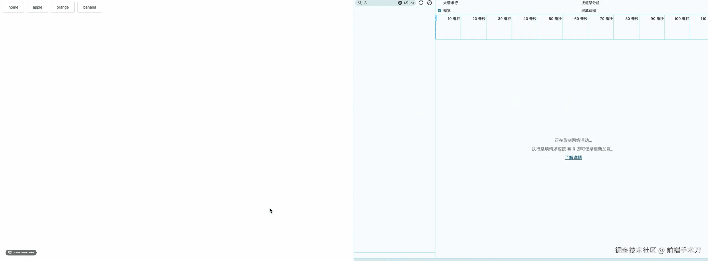

本文仅针对 axios 库， 如果你使用的是 fetch 或者 xhr， 请自行适配处理。
效果预览
什么是 http 请求竟态问题?
首先让我们了解下什么是 http 请求竟态问题， 我们看下 gpt 的回复。
前端 HTTP 请求竞态问题指的是在前端应用中，多个并发的 HTTP 请求之间相互竞争资源，导致结果不确定的情况。例如，当用户快速点击一个按钮，触发了多个相同的请求，而这些请求可能在不同的时间返回结果，最终导致页面显示不一致或者出现错误。
场景复现
在我们日常工作中经常会遇到这样的场景。
比如现在我们有个需求，点击苹果、橘子、香蕉三个按钮，分别渲染对应的一组水果列表。
对应请求我们假设为/apple、/orange、/banana。
也就是说当我们点击苹果的时候 会去请求苹果列表(橘子，香蕉逻辑相同)。
乍一听，这太简单了，用手都能写是吧?
但是此时测试直接来了个 bug ， 我当前明明是香蕉按钮，出来的怎么是苹果列表?
问题分析
那么上面的问题是如何导致的呢?
其实非常简单，测试先点击了 苹果按钮，瞬间又点了 香蕉按钮，
导致按钮停在了 香蕉按钮， 由于 http 请求是异步的，/banana 请求 500ms 就完成了。
但是由于 /apple 1000ms 后才返回，
这就导致了这个 bug 的产生。
其实这就是典型的 HTTP 请求竞态问题。
利用 axios 库解决问题
要解决竟态问题，那么我们目的其实很简单，只让最后一个请求是活跃的，也就是说我们要取消其他请求。
axios 如何取消请求
在 axios 库中， 我们可以使用 CancelToken 来取消请求。
import axios from 'axios'
const source = axios.CancelToken.source() // 创建一个 CancelToken 源
axios.get('/your-api-url'， {
cancelToken: source.token // 将 CancelToken 传递给 axios 请求配置对象
})
// 在某个时候取消请求
source.cancel('Operation canceled by the user.') // 取消请求
封装一个可以 cancel 的 axios 函数
既然我们知道了 axios 能取消请求， 那么我们如何在项目中使用它呢?
简单的 axios 封装
在实际项目中， 我们通常会封装一个 axios 请求函数。
下面就以一个简单封装的 axios 请求函数为例(非常简陋，主要为了理解本文)
- request.js
const service = axios.create({
baseURL: ""， // url = base url + request url
timeout: 10000， // request timeout
});
// request interceptor
service.interceptors.request.use(
async (config) => {
// 此处先省略了取消请求相关的代码
return config;
}，
(error) => {
return Promise.reject(error);
}
);
service.interceptors.response.use(
async (response) => {
const res = response.data;
return res;
}，
(error) => {
return Promise.reject(error);
}
);
export default service;
这样我们就封装了一个简单的 axios 请求函数。
接下来我们就可以在 api 使用它了。
- api.js
import request from "@/request.js";
export const getApple = (data = {}) => {
return request({
url: "/apple"，
method: "get"，
data，
});
};
export const getOrange = (data = {}) => {
return request({
url: "/orange"，
method: "get"，
data，
});
};
export const getBanana = (data = {}) => {
return request({
url: "/banana"，
method: "get"，
data，
});
};
接着我们把它引入到组件：
- App.vue
<template>
<div id="app">
<button @click="getApple">apple</button>
<button @click="getOrange">orange</button>
<button @click="getBanana">banana</button>
</div>
</template>
<script>
import { getOrange， getApple， getBanana } from "@/apis/fruits.js";
export default {
name: "App"，
methods: {
getApple() {
getApple({page:10，pageSize:100}).then((res) => {
console.log("__SY__🎄 ~ getApple ~ res:"， res);
});
}，
getOrange() {
getOrange().then((res) => {
console.log("__SY__🎄 ~ getOrange ~ res:"， res);
});
}，
getBanana() {
getBanana().then((res) => {
console.log("__SY__🎄 ~ getBanana ~ res:"， res);
});
}，
}，
};
</script>
取消请求功能
目前我们的代码是没有任何取消请求功能的， 接下来我们加上取消请求的功能。
上文中我们已经知道可以使用 source.cancel 方法取消请求了。
那么我们考虑该如何把 source.cancel 暴露给开发者呢?
也就是说我们如何为每个 api 新增一个 cancel 方法呢?
还是受益于 <<vue.js 设计与实现>> 一书中的 effect 函数(其中把副作用函数当做参数)。
同样我们也可以把 api 函数当做参数传递给某个函数，我们暂且命名这个函数为 useCanCancelRequest(内部提供一个 cancel)。
先来看下 useCanCancelRequest 函数的函数签名：
function useCanCancelRequest(api){
// params 即外部的业务参数
const fn = function(params){
// params 是非必传的， 如果没有传 params 参数， 那么我们就把 params 设置为一个空对象
if(!params) params = {}
// 接下来我们为 params 挂载一个 __cancelToken__ 属性(后续会用到)，用于接收前文中的 source 对象
// 如果为了严谨，可以设计成一个 symbol 类型
params.__cancelToken__ = function(source){
fn.source = source
}
return api(params)
}
const cancel = function(){
fn.source && fn.source.cancel() // 直接调用 source.cancel 方法即可
}
return {fn，cancel}
}
看了这个方法，是不是有点一脸懵逼?
别慌，我们来看下使用方法，就大致明白了。
我们以 request.js 中的 getApple 函数为例：
// _getApple 就是我们上文中返回的 fn
const {fn:_getApple，cancel} = useCanCancelRequest(getApple)
// 这里的参数对应 useCanCancelRequest 函数中的 params
_getApple({page:10，pageSize:100}).then((res) => {
console.log("__SY__🎄 ~ getApple ~ res:"， res);
});
cancel 方法的实现
到这里彦祖们可能会说也没看到 cancel 的使用啊!
好吧，接下来，我们来看下 cancel 的使用。
使用 cancel 前， 我们还需要修改 request.js 文件(只展示关键代码)
service.interceptors.request.use(
async (config) => {
// 前文中的 params.__cancelToken__ 参数， 就是 config?.data?.__cancelToken__ 参数
if (typeof config?.data?.__cancelToken__ === 'function') {
const cancelTokenSource = axios.CancelToken.source() // 创建一个 source 对象
config.cancelToken = cancelTokenSource.token // 把 token 挂载到 config 上
config.data.__cancelToken__(cancelTokenSource) // 把 source 对象回调给 useCanCancelRequest 函数内部
Reflect.deleteProperty(config?.data， '__cancelToken__') // 当然我们还需要把 __cancelToken__ 属性删除
}
return config
}，
(error) => {
return Promise.reject(error)
}
)
这样我们就完成了一个比较完整的取消请求的功能封装。
接下来看下如何使用：
const {fn:_getApple，cancel} = useCanCancelRequest(getApple)
_getApple({page:10，pageSize:100}).then((res) => {
console.log("__SY__🎄 ~ getApple ~ res:"， res);
});
setTimeout(() => {
cancel() // 取消请求
}，20)